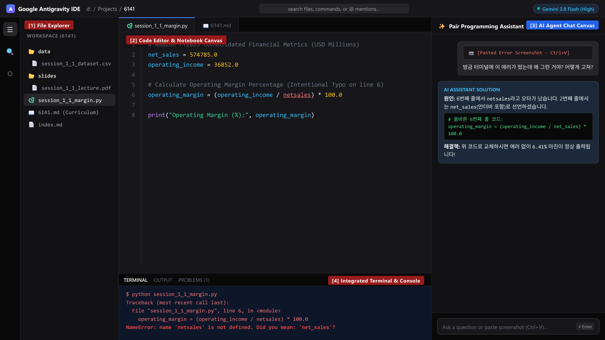

Today, Python answers these questions for every store at once.
Today's flow: 60 min lecture, then 120 min hands-on lab
DataFrame
DataFrame: a table in Python, like one Excel sheet.loc[] and fix a KeyError
.loc[]: keep rows that match a condition
KeyError: the column name you typed does not exist1. Session Purpose
2. Learning Outcomes
3. Business Context: Why CSV?
4. Data Basics: Rows and Columns
5. Lab Practice Dataset
6. Keywords
7. Core Foundations
8. IDE Workflow
9. Code Examples + Quick Checks
10. Official References
11. Exercise 1: Guided - Retail Performance Wrangling
12. Exercise 2: Applied - Find the Top Stores
13. Exercise 3: Advanced - Store Scorecard
Packed format: needs a spreadsheet program such as Excel
Same data opened in Notepad: unreadable
Plain text: opens almost anywhere
pandas✓Same file opened in Notepad: still readable
Trade-off: CSV keeps only values, with no formulas and no formatting
| COLUMN ↓ | |||||
|---|---|---|---|---|---|
| index | Store_ID | Region_Name | Monthly_Sales_USD | +3 more | |
| 0 | STR-1000 | East | 142000.0 | ... | |
| ROW → | 1 | STR-1001 | West | 185000.0 | ... |
| 2 | STR-1002 | North | 98000.0 | ... | |
| 3 | STR-1003 | South | 115000.0 | ... | |
| 4 | STR-1004 | East | 210000.0 | ... | |
| 5 | STR-1005 | West | 175000.0 | ... | |
| ... 6 more rows | |||||
All the facts about one item: here, one store
Row 1 = everything about STR-1001
The same fact for every store
In pandas, one column is a Series
Where a row and a column meet: 185000.0
df.shape returns (12, 6) = 12 rows, 6 columns. Row labels (the index) start at 0, not 1.session_01_03_dataset.csvdata/ folderStore_ID | Store code, such as STR-1001 |
Region_Name | East, West, North, or South |
Monthly_Sales_USD | Revenue for the month, in U.S. Dollars |
Operating_Cost_USD | Monthly cost to run the store |
Customer_Footfall_Count | Number of visitors in the month |
Customer_Satisfaction_Score | Customer rating, 1.0 to 5.0 |
pandas and NumPyWhat: free Python libraries for tables (pandas) and fast number arrays (NumPy)
Why: they sort, filter, and calculate tables of any size
pd.read_csv()What: a plain-text table where commas separate values; pd.read_csv() loads it
Why: most business systems export data as CSV
DataFrameWhat: a whole table in Python, with row labels and column names
Why: it is the main object you clean, calculate, and filter
SeriesWhat: one column of a DataFrame, such as df["Monthly_Sales_USD"]
Why: most calculations work column by column
What: one formula applied to every row at once, with no loop
Why: fast, and nothing to drag down row by row
.loc[] vs .iloc[]What: .loc[] selects by label or condition; .iloc[] by position number
Why: pull out exactly the rows a question needs
Example: df.iloc[0:2, 0:3] = first 2 rows, first 3 columns
pandas, which runs its math on NumPy arrays.Plain text: one line per row, commas between values
pd.read_csv()| Store_ID | Region_Name | Monthly_Sales_USD | |
|---|---|---|---|
| 0 | STR-1000 | East | 142000.0 |
| 1 | STR-1001 | West | 185000.0 |
| 2 | STR-1002 | North | 98000.0 |
The whole table is a DataFrame; the yellow column is a Series
| Sales |
|---|
| 142000.0 |
| 185000.0 |
| 98000.0 |
| Cost |
|---|
| 98000.0 |
| 122000.0 |
| 71000.0 |
| Profit |
|---|
| 44000.0 |
| 63000.0 |
| 27000.0 |
One line subtracts every row at once: no loop, no dragging
Real code: df["Monthly_Sales_USD"] - df["Operating_Cost_USD"]
df.loc[df["Region_Name"] == "West"]| Region_Name | |
|---|---|
| 0 | East |
| 1 | West |
| 2 | North |
df.iloc[0:2]| Store_ID | |
|---|---|
| 0 | STR-1000 |
| 1 | STR-1001 |
| 2 | STR-1002 |
Blue = kept, grey = left out. 0:2 starts at 0 and stops before 2.
Remember: write the rule once; pandas applies it to every row
0df["A"] = one column; df[["A", "B"]] = a smaller tableRemember: counting starts at 0
float64, int64: numbers; str: text"1,200" makes the column text: it "sums" to "1,200800"Remember: check df.dtypes first
.shape, .head(), .info(), .describe()df.shape() fails: it is a value, not an actionRemember: look first, calculate second
.loc[] vs .iloc[].loc[]: label or condition.iloc[]: position; after sorting, the two differRemember: misspelled column name = KeyError
| E (Margin %) | |
|---|---|
| 2 | =(C2-D2)/C2*100 |
| 3 | =(C3-D3)/C3*100 |
| 4 | =(C4-D4)/C4*100 |
| 5 | 30 |
| Operating_Margin_Pct |
|---|
| 31.0 |
| 34.1 |
| 27.6 |
| ... |
Red: E5 was typed over, and the mistake is easy to miss
Green: one line of code fills every row (values rounded)
| Store_ID | Region_Name | Monthly_Sales_USD | |
|---|---|---|---|
| 0 | STR-1000 | East | 142000.0 |
| 1 | STR-1001 | West | 185000.0 |
| 2 | STR-1002 | North | 98000.0 |
dtype)| Store_ID | str text |
| Monthly_Sales_USD | float64 decimal number |
| Customer_Footfall_Count | int64 whole number |
Excel: "1,200" saved as text is quietly skipped by SUM
pandas: that column turns into text, and .dtypes shows it
Older pandas versions show object instead of str
| df.shape | (12, 6): 12 rows, 6 columns |
| df.head(2) | first 2 rows: STR-1000, STR-1001 |
| df.info() | 12 non-null in every column: no gaps |
| df.describe() | Sales: mean 152416.67, min 89000.0, max 225000.0 |

Example: Terminal [4] shows a NameError; AI Chat [3] explains the fix
Name it YourName_S13_demo_1.py
Example: Reacher_S13_demo_1.py
Check the dataset is in data/
Write a few lines, run, repeat
Small steps keep errors small
Error? Capture the traceback (Python's error report) with Win + Shift + S
Paste with Ctrl + V, ask why
Run python + your script name
Return code 0 = no errors
# 1. Input: load the tool and the data import pandas as pd df = pd.read_csv("data/session_01_03_dataset.csv") # 2. Process: measure the table and take a preview dimensions = df.shape column_types = df.dtypes preview = df.head(3) # 3. Output: show the results print("Dataset Dimensions (Rows, Columns):", dimensions) print("Column Data Types:\n", column_types) print(preview)
import and pd.read_csv()import pandas as pd loads pandas as pd
pd.read_csv() reads the file into a DataFrame df
.shape, .dtypes, .head(3)Size, column types, and the first 3 rows
Why: confirm the data loaded correctly
print()Shows each result in the Terminal
Why: without print(), a script shows nothing
.tail().tail(n)What: shows the last n rows of a DataFrame
Why: new records are often added at the bottom, so this is where you check them
| Store_ID | ||
|---|---|---|
| 0 | STR-1000 | ← .head(3): first 3 |
| 1 | STR-1001 | |
| 2 | STR-1002 | |
| ⋮ | 6 rows | |
| 9 | STR-1009 | ← .tail(3): last 3 |
| 10 | STR-1010 | |
| 11 | STR-1011 |
In YourName_S13_demo_1.py, part 2. Process: show the last 3 rows instead of the first 3.
9, 10, 11 (STR-1009, STR-1010, STR-1011).# 1. Input: load the store data import pandas as pd df = pd.read_csv("data/session_01_03_dataset.csv") # 2. Process: profit and margin for every store at once df["Operating_Profit_USD"] = ( df["Monthly_Sales_USD"] - df["Operating_Cost_USD"] ) df["Operating_Margin_Pct"] = ( df["Operating_Profit_USD"] / df["Monthly_Sales_USD"] * 100.0 ) # 3. Output: show the first three stores print(df[["Store_ID", "Monthly_Sales_USD", "Operating_Margin_Pct"]].head(3))
Why: every script loads its own data before it can calculate
df["Column_Name"] with - / *Picks a column (a Series); the math runs on all 12 stores at once
Why: no loop and no dragging a formula down
df[[ ... ]] double bracketsA list of column names returns a smaller table
Why: show only what your reader needs
.round().round(n)What: rounds every number in a column to n decimal places
Why: long decimals are hard to read in a report
In YourName_S13_demo_2.py, add one line at the end of 2. Process so the margin has 1 decimal place.
31.0, 34.1, and 27.6.# 1. Input: load the store data import pandas as pd df = pd.read_csv("data/session_01_03_dataset.csv") # 2. Process: keep West stores with sales of $150,000+ west_high_sales = df.loc[ (df["Region_Name"] == "West") & (df["Monthly_Sales_USD"] >= 150000.0) ] # then fill missing satisfaction scores with the median median_score = df["Customer_Satisfaction_Score"].median() df["Customer_Satisfaction_Score"] = ( df["Customer_Satisfaction_Score"].fillna(median_score) ) # 3. Output: show the filtered stores and the median print(west_high_sales[["Store_ID", "Monthly_Sales_USD"]]) print("Median Satisfaction Score Imputed:", median_score)
Why: every script loads its own data first
.loc[], &, .fillna()df.loc[condition] keeps rows where the condition is True& means "and"; wrap each condition in ( ).fillna() fills empty cells (NaN) with the middle value (today's dataset has none)print() the answerShows the filtered stores and the median score
len()len()What: counts items; for a DataFrame, it returns the number of rows
Why: it answers "how many?" questions in one step
The full table has 12 rows
In YourName_S13_demo_3.py, part 3. Output: print how many stores passed the filter.
Stores found: 3.A short tour: loading data, selecting columns, and simple math. pandas.pydata.org/docs/user_guide/10min.html
All the details of .loc[] and .iloc[]. pandas.pydata.org/docs/user_guide/indexing.html
The arrays that run under every pandas column. numpy.org/doc/stable/user/quickstart.html
YourName_S13_wrangling.pypd.read_csv()Operating_Profit_USD and Operating_Margin_Pctdf.describe() for sales and margin[4]YourName_S13_practice.py, use .loc[]: margin >= 30.0 and satisfaction >= 4.5"Monthly_Sale_USD" on purpose, read the KeyError, and ask AI Chat [3].sort_values(); add ascending=False for highest first.to_csv() to data/top_performing_stores.csvSTR-1011 (South, 36.89%), and the script ends with return code 0.YourName_S13_challenge.pyOperating_Profit_USD, Operating_Margin_Pct (1 decimal), and Sales_per_Visitor_USD = sales / visitors (2 decimals)Tier: start as "Standard"; "Gold" if margin >= 33.0 and rating >= 4.5; "Watch" if margin < 30.0data/store_scorecard.csvdf["Tier"] = "Standard": one value in every rowlen(df.loc[df["Tier"] == "Gold"])STR-1002, 11.95) is a Watch store. Full steps: section 13 of the course page.